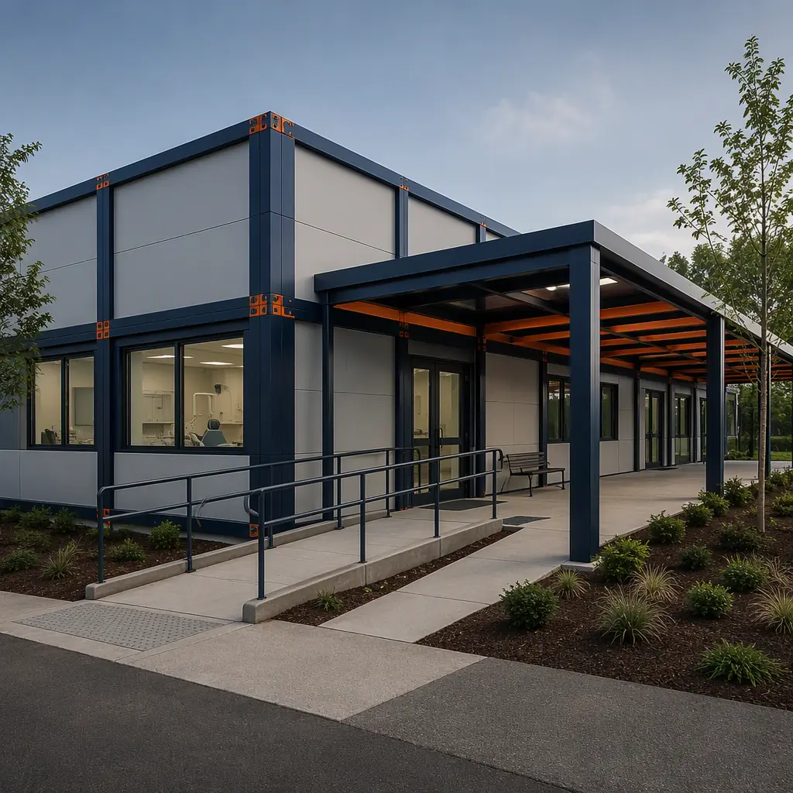
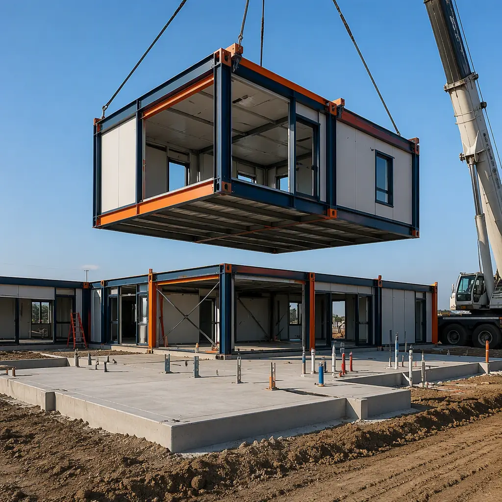
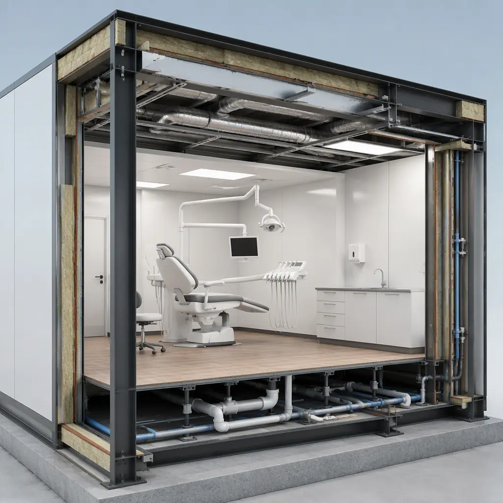
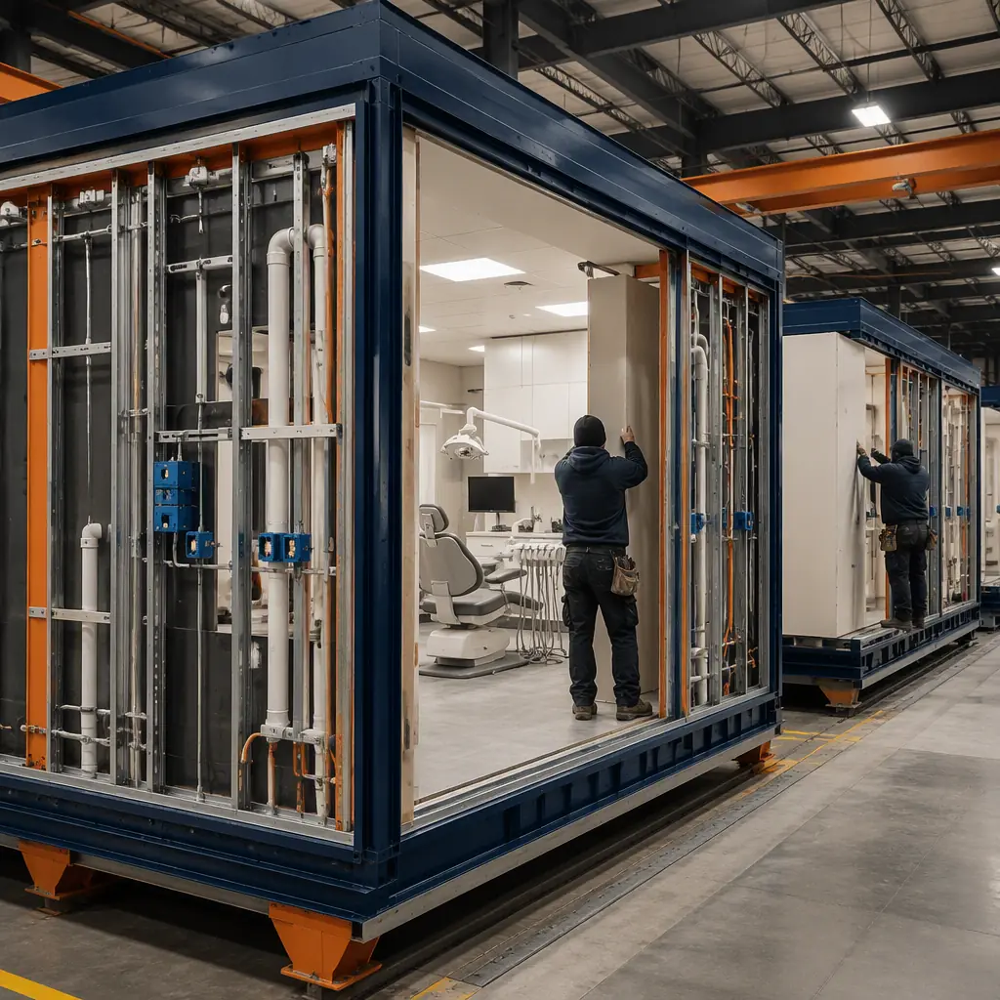
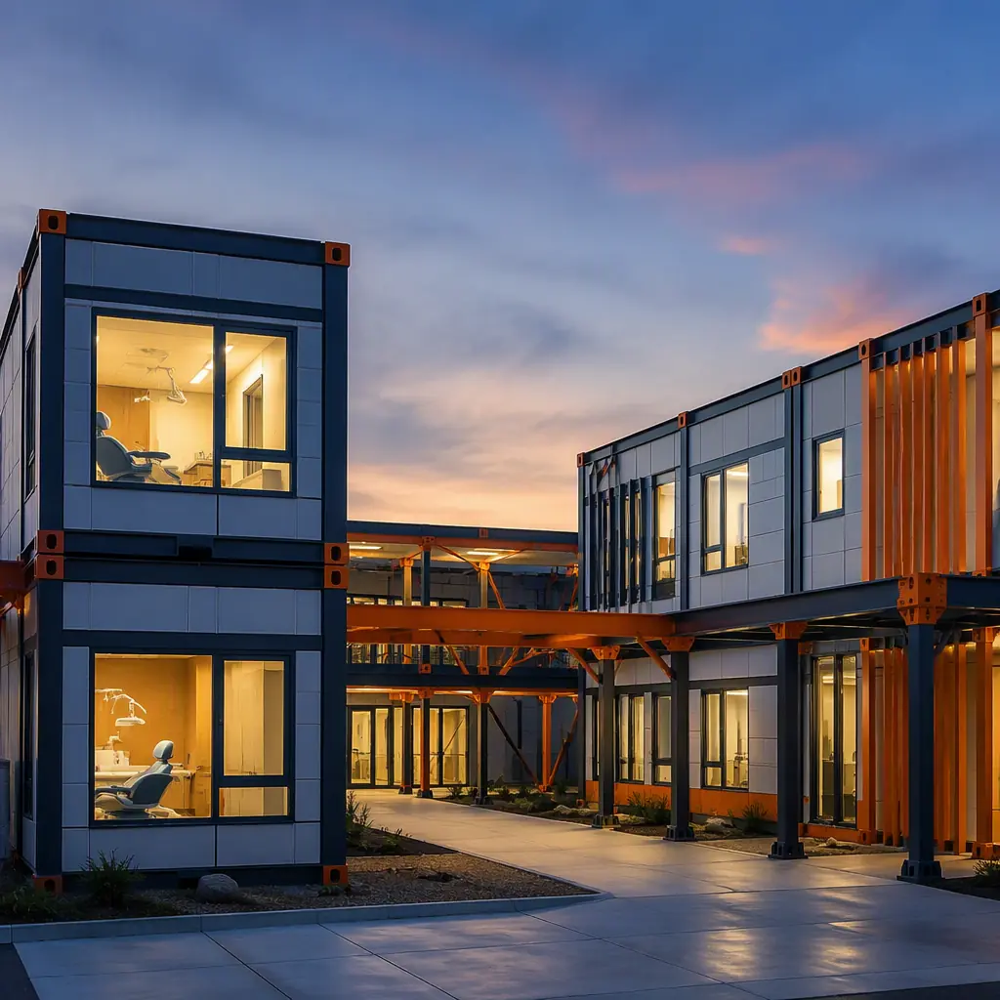

A dental clinic is a building program disguised as a medical facility: 2,000–6,000 sq ft of treatment operatories, sterilization and central supply, imaging suites, and front-office space that must be engineered around water lines, vacuum systems, compressed air, and infection-control protocols — then pass state dental board and health department inspection before a single patient is seen. Conventionally delivered, a 6-operatory clinic takes 12–18 months and $400–$700 per sq ft, with the plumbing and medical-gas trades sequenced behind every other trade. Modular prefabricated construction restructures the program: the operatories, sterilization center, imaging suites, and reception modules are factory-built as steel-frame units — dental water lines, suction vacuum, compressed air, and electrical rough-in installed in the plant — then craned into place and commissioned in 4–7 months, with a 15–30% building cost reduction and a clinic that opens treating patients, not hosting a punch list. The approach extends the factory-built logic we document for modular medical clinics and outpatient buildings to the specific plumbing, radiation, and infection-control demands of dentistry. This guide covers the dental module package, operatory infrastructure, imaging and sterilization design, cost structure, and the regulatory path for DSOs, group practices, and independent dentists.

Why Dental Clinics Are a Plumbing and Infection-Control Problem
Dental facilities fail or succeed on infrastructure that ordinary buildings never carry. Three systems define the difference between a dental clinic and any other commercial space:
- Dental water lines are a clinical system. Each operatory needs dedicated dental unit water lines supplying the handpiece, scaler, and air-water syringe, plus evacuation lines to the vacuum system. The water quality must meet dental unit waterline standards (fewer than 500 CFU/mL of heterotrophic bacteria per CDC guidance), which drives loop design, anti-retraction valves, and treatment points that a factory can assemble and test before delivery.
- Vacuum and compressed air are plant-scale utilities. A 6-operatory clinic runs a centralized vacuum pump and dental compressor sized for simultaneous use. These are mechanical rooms that a site-built project assembles in the field; a modular project integrates them into a factory-built utility module, pre-piped and pre-commissioned — the same factory-integration logic we document for modular HVAC and indoor air quality systems, applied to dental utilities.
- Infection control is built into the finishes. Operatory surfaces, flooring, and casework must withstand hospital-grade disinfectants, and the sterilization center must be laid out as a one-way flow from dirty to clean. Factory fabrication controls the finish quality and the flow logic in a way field work cannot.
The result is that a dental clinic is closer to a laboratory or clean-room facility than to a retail build-out — and like those facilities, it benefits disproportionately from factory construction, where the critical systems are installed once, in a controlled environment, and tested before the building ever reaches the site.

The Modular Dental Clinic Module Package
A modular dental clinic divides into functional blocks that are manufactured, tested, and shipped independently, then combined on site:
Treatment Operatory Modules
Operatory modules are the clinical core. Each module carries 2–4 operatories with the dental chair, delivery system, and cabinetry mounted to factory-installed wall-reinforcement plates; dedicated dental water, vacuum, and compressed-air drops at each position; and the infection-control finishes specified by the practice — seamless flooring, scrubbable walls, and coved base details. The operatory dimensions (typically 10–12 ft wide) map directly onto module widths, which is why dental clinics are among the most modular-friendly building types we build, alongside the diagnostic imaging and radiology centers documented in our imaging guide.
Sterilization, Central Supply & Laboratory Modules
The sterilization center — often called the dirty-to-clean flow — is where clinics most often fail inspection. Modular delivery builds the decontamination room, sterilization room, and sterile storage as a factory-controlled sequence: the instrument wash station, autoclaves, and ultrasonic cleaners are pre-plumbed and vented in the plant, and the pass-through windows between zones are factory-framed so the one-way workflow is structurally enforced. The same discipline applies to the on-site dental laboratory module when the practice does in-house crown and bridge work.
Imaging, Reception & Administrative Modules
Panoramic and cone-beam CT imaging suites require radiation shielding — lead-lined or gypsum-lead wall assemblies with strict door and sight-glass details. These are built to a higher standard in the factory, where the shielding continuity can be inspected before walls are closed. Reception, consultation, and administrative modules follow the standard outpatient clinic program, with the front-office layout the practice already knows how to run.

Dental Infrastructure: Water, Vacuum, Air & Power, Factory-Integrated
The infrastructure that makes a dental clinic clinical is exactly what a factory builds best. Dental water is distributed through dedicated loops with anti-retraction protection and sampling points at each operatory, so the practice can verify waterline compliance on day one. Vacuum and compressed air are centralized in a utility module — duplex vacuum pumps, oil-free dental compressors, and the receivers sized for the operatory count — pre-piped and balanced in the plant. Electrical rough-in includes isolated circuits for imaging equipment (which is sensitive to voltage fluctuations from chair motors and autoclaves), the same power-quality discipline we document for imaging center construction. Because all of it is installed and tested before the modules ship, field commissioning shrinks from weeks to days — the schedule logic we detail in our modular construction scheduling guide.
Cost Structure — Modular vs. Conventional Dental Delivery
| Cost Category | Conventional (6 operatory / 4,500 sq ft) | Modular (6 operatory / 4,500 sq ft) |
|---|---|---|
| Building shell & structure | $0.9–1.4M | $0.6–1.0M (factory-built) |
| Dental utilities (water, vacuum, air, medical gas) | $180K–320K | $120K–210K (plant-integrated) |
| Imaging suites & radiation shielding | $90K–180K | $70K–130K (factory-shielded) |
| Field labor, tenant fit-out & schedule risk | $350K–650K | $150K–280K |
| Total Clinic Delivery | $1.5–2.6M | $0.9–1.6M |
The 20–35% building cost reduction compounds with 8–11 months of earlier opening — for a DSO that means new operatories collecting revenue a full calendar year sooner, and for an independent dentist it means the difference between building on a practice peak and building into a market that has moved on. For the full economics of modular project delivery, see our 2026 modular cost guide and our developer's ROI analysis.
Regulatory Path: Dental Board, Health Department & ADA
Dental clinic approval runs through three gatekeepers, and modular delivery is engineered to clear each one faster. State dental boards review the facility plan for operatory counts, sterilization flow, and radiology compliance — a modular manufacturer submits the same drawings a site contractor would, but with factory quality-control documentation attached. Health departments inspect water systems and infection control; the factory's pre-commissioning records give inspectors the test results they want before the building arrives. And ADA compliance — doorway widths, accessible operatories, and restroom layouts — is built into the module design rather than resolved in the field, the approach we document for ADA-compliant modular buildings. The permitting and zoning path for medical use on commercial land is covered in our permitting and zoning guide, and the procurement route for DSOs running multi-site rollouts is in our RFP procurement guide.

Multi-Site Rollouts & Phased Expansion
Dental service organizations are the fastest-growing buyers of modular dental buildings because the model fits their growth math: a DSO opening 10–20 clinics per year needs predictable cost, schedule, and brand consistency, and modular delivery supplies all three from a single factory relationship. The same factory-built modules are delivered to different sites with the same floor plan, the same infrastructure package, and the same finish quality — the rollout logic we document for franchise and chain rollout construction. For an existing practice, a modular addition — new operatory wing, imaging suite, or second floor — is built while the clinic keeps treating patients, then connected during a weekend shutdown, the live-facility phasing we cover in modular additions and expansions.
Is Modular Right for Your Dental Practice?
Modular dental delivery delivers the strongest value for group practices and DSOs opening multiple locations on a fixed schedule; for independent dentists building on a prime commercial site where speed translates directly into revenue; for practices relocating while keeping existing operatories running; and for specialty clinics — oral surgery, orthodontics, and pediatric dentistry — whose higher equipment density makes factory-installed infrastructure even more valuable. For single-operatory conversions of existing retail space, a conventional fit-out is usually simpler; the modular case is strongest at 4–16 operatories, where the infrastructure package is substantial and the schedule savings are measured in months. In every case, the factory-built clinic delivers the water-quality control, infection-control flow, and imaging shielding that dental practices depend on — with the financing path covered in our modular construction lending guide.
